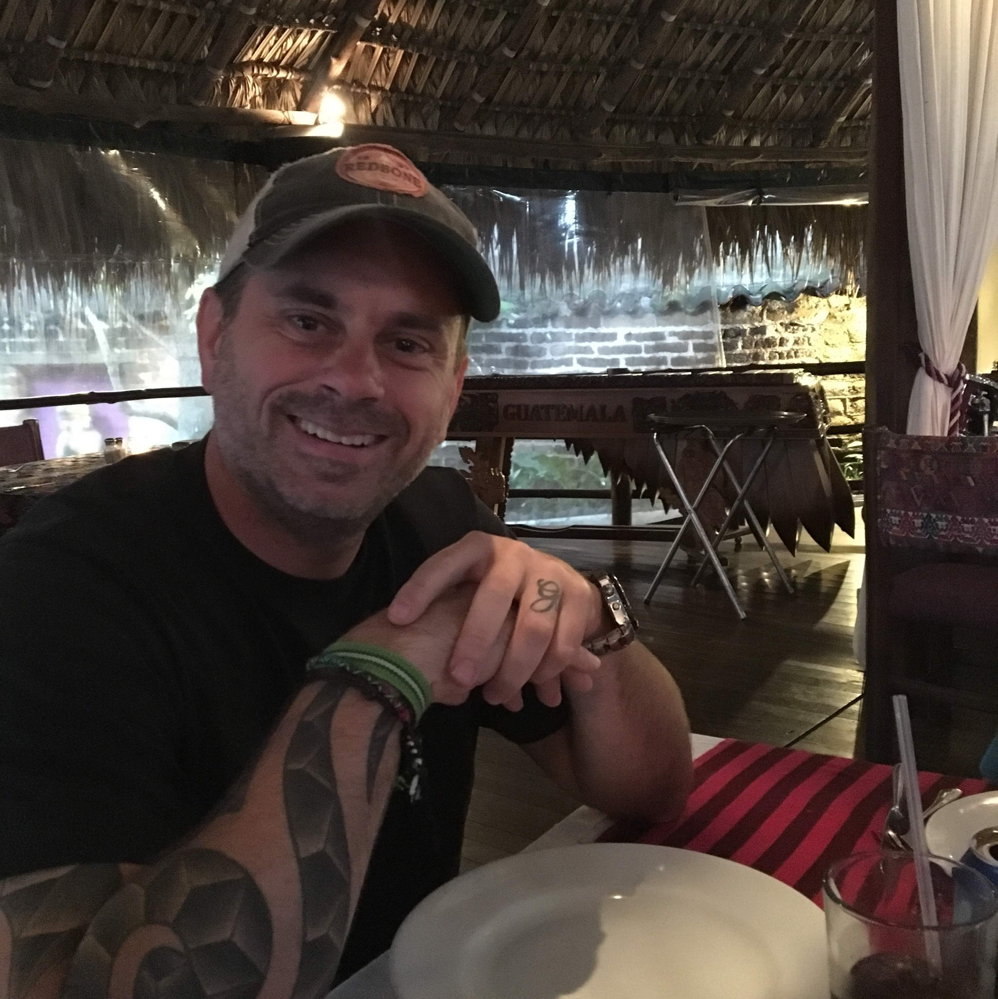

About Me
I am a senior management leader working to build my cloud-centric developer
portfolio by learning code, the logic behind it and how to efficiently write it. I am
currently working full-time and attending The Coding Boot Camp at UNC Charlotte part-time
with plans to build mind-blowing serverless functions with my new found knowledge.
In summary, I am an I.T. professional with cross-functional
expertise in daily operations of enterprise and delivery platforms
including primary responsibilities in architecting/operating solutions on AWS,
on-premise to cloud migrations and distributed applications as well as deep
architectural discussions with executives, IT management and developers.